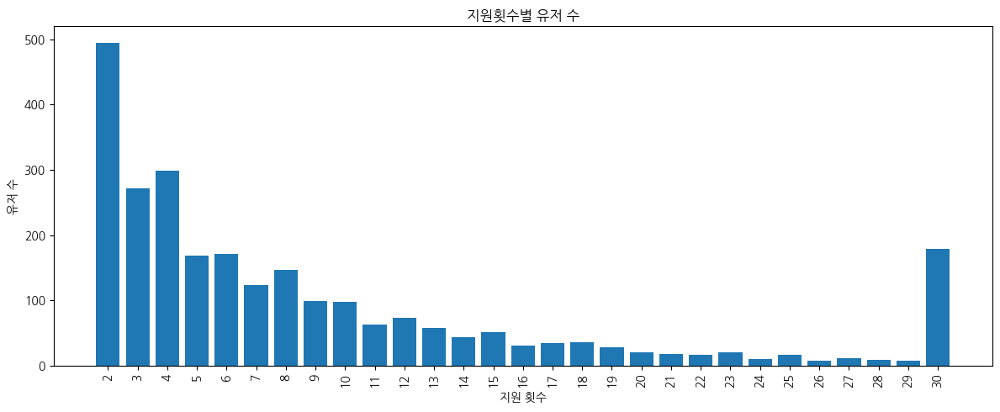
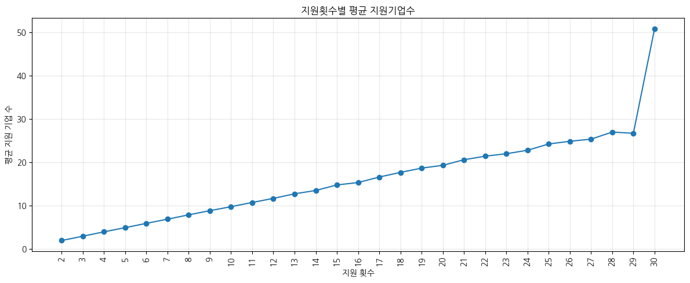
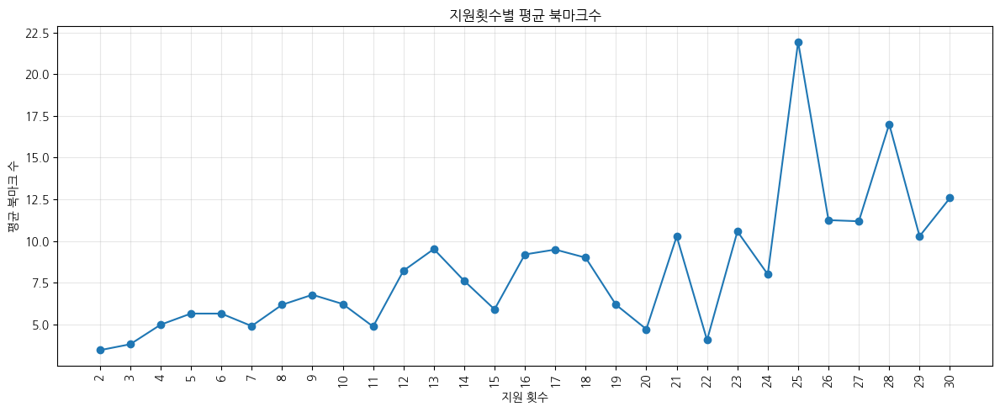
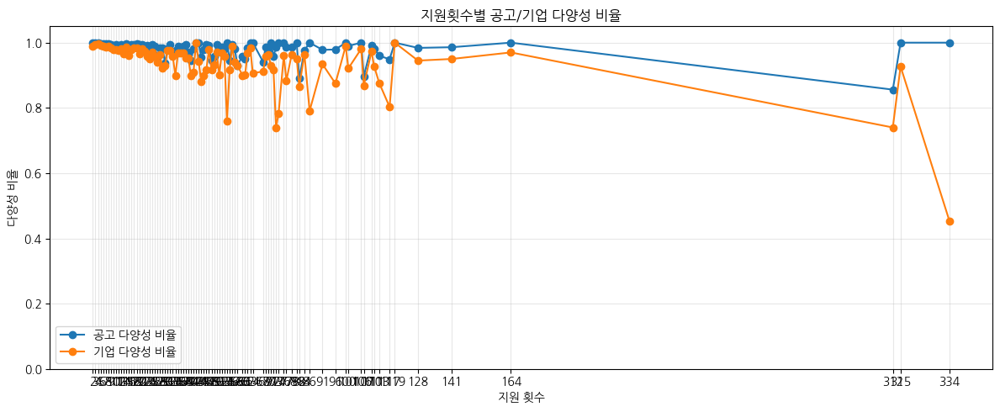

리텐션(재방문)된 유저 중 2회 이상 지원한 "다회 지원자"를 대상으로, 지원 횟수가 늘수록 지원기업수·북마크·지원 다양성이 어떻게 달라지는지 탐색한다. 05_CoreUser_Report.ipynb의 프로필 강화 분석(11.2절)으로 이어지기 전, 지원 횟수 기준 세그먼트 특성을 먼저 살펴본 사전 탐색 노트북이다.
분석 대상: 리텐션 유저 중 지원 횟수 2회 이상. 지원 횟수 1~29회는 개별 구간으로, 30회 이상은 극단치가 통계를 왜곡하지 않도록 하나의 그룹("30")으로 묶어 처리했다.
1. 다회 지원자의 규모와 분포

그림 1. 지원 횟수 구간별 유저 수(30회 이상은 하나의 구간으로 통합). 2회 지원자가 약 495명으로 가장 많고, 이후 완만히 줄어들다가 30회 이상 구간에서 약 180명으로 다시 두드러진다.
지원 횟수 분포는 긴 꼬리(long-tail) 형태다 — 소수 지원(2~4회)에 몰려 있지만, 30회 이상 반복 지원하는 유저층도 무시할 수 없는 규모(약 180명)로 존재한다.
2. 지원 횟수가 늘수록 커지는 활동 강도
지원을 많이 할수록 지원 기업 수와 북마크 수도 함께 늘어난다.

그림 2. 지원 횟수 구간별 평균 지원 기업 수. 2회 지원자는 평균 2개 기업, 30회 이상 구간은 평균 약 51개 기업에 지원한다.

그림 3. 지원 횟수 구간별 평균 북마크 수. 구간별 편차는 있지만(표본이 작아지는 고횟수 구간일수록 변동폭이 커짐), 전반적으로 지원 횟수가 많은 구간일수록 북마크 수도 높은 경향을 보인다.
지원 기업 수는 지원 횟수와 거의 선형적으로 증가한다 — 지원을 많이 하는 유저는 같은 기업에 반복 지원하는 것이 아니라 그만큼 많은 기업을 접한다.
북마크 수도 대체로 함께 증가해, 다회 지원자는 북마크 기능도 더 적극적으로 사용하는 경향을 보인다.
3. 지원 다양성 — 반복 지원이 아닌 폭넓은 탐색
지원 공고 수 대비 지원 기업 수의 비율("다양성 비율", 1에 가까울수록 매번 다른 공고·기업에 지원)을 보면, 다회 지원자의 행동 성격이 뚜렷해진다.

그림 4. 지원 횟수별 공고 다양성 비율(파랑)과 기업 다양성 비율(주황). 대부분 구간에서 두 비율 모두 0.9~1.0 사이에 머문다.
지원 공고 수와 지원 기업 수가 거의 비례한다 — 지원 10회면 서로 다른 공고 10개, 다른 회사 10곳에 지원했다는 뜻이다. 다회 지원자는 같은 공고를 반복 지원하는 것이 아니라, 다양한 공고와 기업을 적극적으로 탐색하는 유저다.
다만 지원 300회를 넘는 극소수 극단치 구간에서는 기업 다양성 비율이 0.45까지 떨어지는 지점이 있다 — 한두 명의 특이 유저가 소수 기업에 반복 지원한 결과로 보이며, 전체 패턴을 뒤집는 수준은 아니다.
결론 및 다음 단계
지원 횟수는 단순 반복이 아니라 "플랫폼을 폭넓게 활용하는 정도"를 보여주는 대리 지표(proxy)로 해석할 수 있다. 이 세그먼트 특성(지원 횟수 기준 그룹)은 05_CoreUser_Report.ipynb의 여러 절(9. 회사 탐색, 10. 오퍼·사람/네트워크, 11. 프로필 강화)에서 동일한 apply_count_group 기준으로 재사용되며, 최종적으로 프로필 강화 행동과 다회 지원 사이의 관계 분석으로 이어진다.